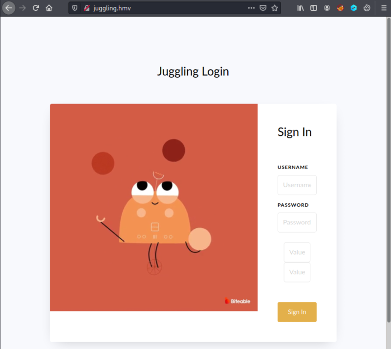
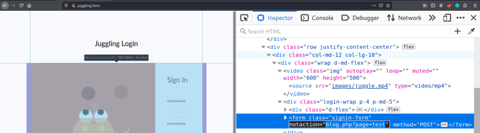
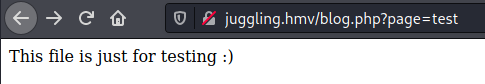

3. Enumerate
1. Add to your Kali Machine “etc/hosts” file the domain "juggling.hmv”.
192.168.12.58 juggling.hmv
2. Open a browser and go to http://juggling.hmv

Nothin special here.
2. View the source code and look for "blog.php?page=test"

3. Visit
http://juggling.hmv/blog.php?page=test. 